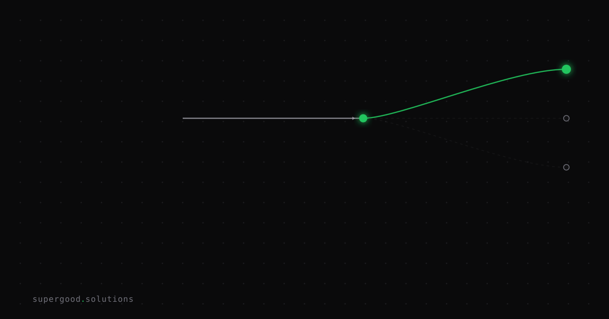

What a System Prompt Is and Why Your Vendor's AI Isn't the One You Tested
TL;DR: Every AI product starts each conversation with instructions its maker wrote and you never see. That text is why the same model can feel like a careful librarian in one tool and a blunt analyst in another.
Key Insight
A system prompt is a block of text placed ahead of your first message. It sets the persona, the tone, the refusal rules, the tools on offer, and the date. The model reads it on every turn as if it were part of the conversation.
When you test a vendor's assistant, you are not testing a model. You are testing a model plus that hidden layer, plus whatever retrieval and guardrails sit around it. Change any one of them and the behavior changes.
Anthropic publishes the system prompts for its consumer apps, and the page says something worth reading twice. Those prompts apply to claude.ai and the mobile apps, not to the API. Even for the apps, only one version of the prompt is published, and other versions, such as the ones used when web search is on, are not. If the lab that makes the model documents only part of it, assume an enterprise vendor documents less.
Why Teams Miss This
Procurement compares models. Behavior comes from the stack. Teams read a benchmark, sit through a demo, and conclude that "the model is good at this." Then they wire the same model into their own app through the API and get something noticeably different.
Nothing is broken. The demo ran with the vendor's system prompt, tuned for the vendor's audience. Your API call runs with whatever you wrote, which is often one sentence.
It goes wrong in three ways:
- You blame the model for a hedge or a refusal that is really one line in someone else's prompt.
- A vendor edits its prompt, your outputs shift, and nothing in your changelog explains it.
- Your instructions and the vendor's collide, and the vendor's usually win.
How to Actually Do It
The fastest way to feel this is to run the same question under three system prompts and read the outputs side by side. It takes ten minutes and costs pennies.
import anthropic
client = anthropic.Anthropic()
question = "A customer wants a refund after 45 days. Our policy says 30. What do I tell them?"
prompts = {
"none": None,
"cautious": "You are a support assistant. Never promise anything. Escalate any policy exception to a human.",
"operator": "You are a senior support lead. Give a direct recommendation in two sentences, then one risk.",
}
for name, system in prompts.items():
kwargs = {"system": system} if system else {}
reply = client.messages.create(
model="claude-sonnet-5-5",
max_tokens=300,
messages=[{"role": "user", "content": question}],
**kwargs,
)
print(f"--- {name} ---")
print(reply.content[0].text)Same weights, same question, three different employees. Once you have seen that, do four things:
- Ask each vendor whether you can see the default system prompt, whether you can append to or override it, and whether they will tell you when it changes.
- Keep your own system prompt in a file under version control, reviewed like code.
- Save 20 to 50 real questions from your workload and rerun them whenever the prompt, the model version, or the vendor changes.
- When an answer looks wrong, read the instructions before you swap the model.
What We've Learned
Most of the "the AI got worse" tickets we see trace back to a changed instruction layer, not a changed model. Reading the prompt is the cheapest debugging step there is, and almost nobody does it first.
Next experiment: pick one AI tool your team already uses and write down what you believe its system prompt says. Then try to confirm it.
Sources
- Anthropic, system prompt release notes (consumer apps only, not the API): platform.claude.com/docs/en/release-notes/system-prompts
- Anthropic, API reference for the system parameter: docs.anthropic.com
- OpenAI, Model Spec on the instruction hierarchy: model-spec.openai.com
Have a specific workflow in mind?
Bring it to a Quick Scan — a live working session where we'll tell you honestly whether it should be an agent, a workflow, or left alone, before you spend a dollar building it. You get 3 prioritized recommendations on the call, a one-page summary after, and the $500 credited toward any engagement within 30 days.
Get new posts + practical agent-ops notes
One email when something new goes up. No nurture sequence, no spam — unsubscribe whenever you want.